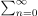
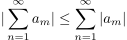
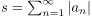
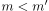
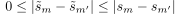
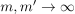
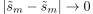

Konvergenz einer absolut konvergenten Reihe
1. Satz
Sei  absolute konvergente Reihe, so folgt, dass konvergiert und es gilt folgende Ungleichung

1
2. Beweis
Sei $sm = ∑n=1∞ | an | $ (monoton wachsende) und  und $ ~{s}m ∑n=1m an$
Sei  Aus der Dreiecksungleichung folgt:

2
nach dem Cauchysches Konvergenz-Kriterium folgt:
3
für  so dass für

4
und nach Cauchysches Konvergenz-Kriterium folgt, dass $ ~{s}m$ konvergiert